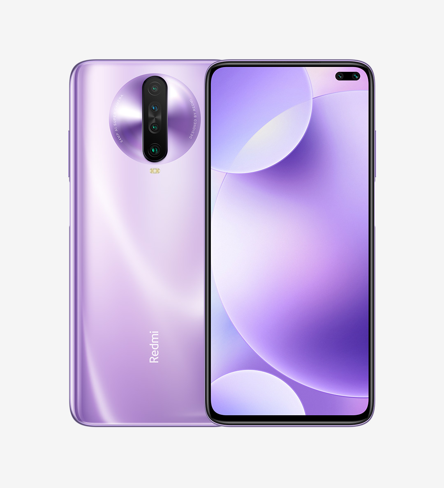

Xiaomi Redmi K30

Spesifikasi :
- Layar: IPS LCD 6.67 inches, 107.4 cm2 (~84.8% screen-to-body ratio)
- Chipset: Qualcomm SDM730 Snapdragon 730G (8 nm)
- CPU: Octa-core (2×2.2 GHz Kryo 470 Gold & 6×1.8 GHz Kryo 470 Silver)
- RAM: 6 GB, 8 GB
- Memori Internal: 64 GB, 128 GB
Awal tahun 2020, Xiaomi memberikan kejutan spesial dengan meluncurkan Redmi K30, sebuah smartphone dengan harga 3 jutaan yang dibekali dengan layar super besar – 6,67 inci. Dengan layar sebesar ini, baik remaja maupun lansia bisa beraktivitas dengan leluasa menggunakan ponsel ini.
Dapur pacu Redmi K30 tidak bisa disepelekan karena sudah dilengkapi dengan chipset Qualcomm SDM730 Snapdragon 730G (8 nm) yang tentunya akan mendukung segala macam aktivitas multitasking. Anda pun dapat membuka sejumlah aplikasi berat sekaligus tanpa lag karena HP ini membawa RAM 6 GB atau 8 GB.
Kamera yang ditawarkan Redmi K30 juga bukan main-main. Pada kamera utama terdapat 4 buah kamera yang masing-masing menawarkan resolusi 64 MP, 8 MP (ultrawide), kamera makro 2 MP, dan kamera sensor 2 MP. Untuk selfie, Xiaomi menyematkan 2 buah kamera di bagian depan dengan resolusi 20 MP dan 2 MP.
Secara keseluruhan, Redmi K30 adalah sebuah smartphone ekonomis dengan spesifikasi yang lebih dari lumayan. Apalagi ponsel ini juga membawa baterai dengan kapasitas yang cukup besar, yakni 4500 mAh.
~BACK~